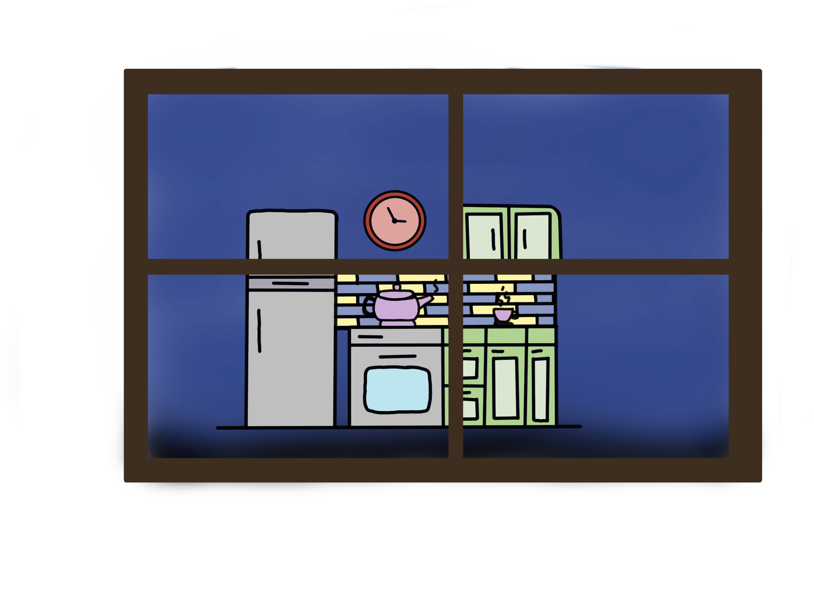

My mom prioritized language learning as a child. One of my earliest memories is being in the bath listening to my mom practice German, which she used to speak in high school, and liking the sounds.

Because my mom wanted me to learn another language, I was tutored in Japanese for 3 years.

In late middle school, my dad remarried to someone from Honduras. She and I watched telenovelas and American dramas in Spanish together.